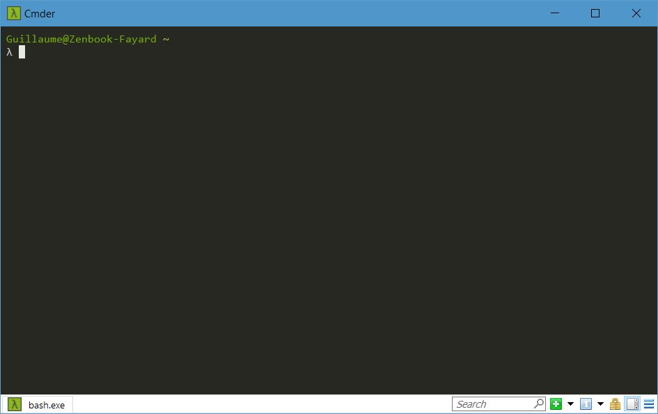

Utiliser Bash sous Windows
Pour le développement, les meilleurs outils sont les outils GNU, en général pas disponibles pour Windows ! Heureusement il existe de nombreux portages.
Terminal Bash
Windows propose un sous-système Linux pour utiliser Bash. Cependant, installer tout un système juste pour avoir accès à quelques commandes c'est cher payé... On va plutôt installer un merveilleux outil : Cmder ! On va utiliser Chocolatey (cf. l'installation du serveur Apache sur Windows)
PS > choco.exe install cmder
Il va l'installer dans un dossier tools à la racine de votre disque (par exemple C:\tools\cmder) Pour pouvoir lancer facilement Cmder, on peut ajouter son exécutable au PATH Windows. Pour cela on recherche Path dans le menu démarrer puis on clique sur "Modifier les variables d'environnement Système" > "Variables d'environnement..." > "Variables système" > Double clic sur "Path", puis on ajoute le chemin vers le dossier de l'exécutable cmder.exe. Il y a juste à taper cmder dans le menu démarrer ou bien faire Windows+R (Exécuter...) et taper la même commande pour le lancer !
Si on lance Cmder, il nous démarre une session CMD, mais nous on veut bash, c'est quand même mieux plus cool quand on aime Linux. Dans les paramètres (clic sur l'icône Lambda > "Settings" > "Startup") on choisit {bash::bash}comme "Specified named task". Quand on lance Cmder, on arrive alors devant ça :

Git pour Windows vient embarqué avec Cmder, on a donc un tas de commandes disponibles comme git, et puis plein de commandes UNIX comme lset compagnie. Pour le SSH, j'avais déjà activé le client Windows OpenSSH, donc je ne sais pas si ça marche sans l'activer.
GNU Make
Une commande bien pratique disponible sur GNU/Linux est GNU Make pour exécuter des recettes pour automatiser des choses (compilation, déploiement...) mais il n'existe pas d'exécutables officiels pour Windows. Du coup on utilise un dépôt fort pratique : ezwinports (portages faciles sur Windows) Ce dépôt a l'avantage d'avoir une version à jour de make. On télécharge l'archive ("without-guile") et on l'extrait là où on veut. Je l'ai mis à côté de Cmder dans tools. Ensuite, on ajoute le dossier bin au PATH de Windows. Au démarrage suivant de Cmder, make est fonctionnel !
λ make --version GNU Make 4.2.1 Built for Windows32 Copyright (C) 1988-2016 Free Software Foundation, Inc. License GPLv3+: GNU GPL version 3 or later <http://gnu.org/licenses/gpl.html> This is free software: you are free to change and redistribute it. There is NO WARRANTY, to the extent permitted by law.
GNUPG
Le gnupg (GNU Privacy Gard) fourni avec Cmder est un peu vieux. On peut en installer un plus récent avec Cmder en mode admin :
λ choco install gnupg-modern
Pour que git utilise bien le gpg que l'on veut, il faut lui indiquer :
λ git config --global gpg.program "C:\Program Files (x86)\gnupg\bin\gpg.exe"
On doi aussi complètement supprimer le gnupg fourni avec Cmder qui se trouve dans le dossier vendor de ce dernier, sinon lorsque l'on appellera la commande gnupg dans Cmder, il nous sortira l'ancien.
λ gpg --version gpg (GnuPG) 2.2.9 libgcrypt 1.8.3 Copyright (C) 2018 Free Software Foundation, Inc. License GPLv3+: GNU GPL version 3 or later <https://gnu.org/licenses/gpl.html> This is free software: you are free to change and redistribute it. There is NO WARRANTY, to the extent permitted by law. Home: D:/home/guillaume/AppData/Roaming/gnupg Algorithmes pris en charge : Clef publique : RSA, ELG, DSA, ECDH, ECDSA, EDDSA Chiffrement : IDEA, 3DES, CAST5, BLOWFISH, AES, AES192, AES256, TWOFISH, CAMELLIA128, CAMELLIA192, CAMELLIA256 Hachage : SHA1, RIPEMD160, SHA256, SHA384, SHA512, SHA224 Compression : Non compressé, ZIP, ZLIB, BZIP2
On peut ainsi, avec Chocolatey et ezwinports, installer plein de commandes utiles !
Commentaires
Comments powered by Disqus